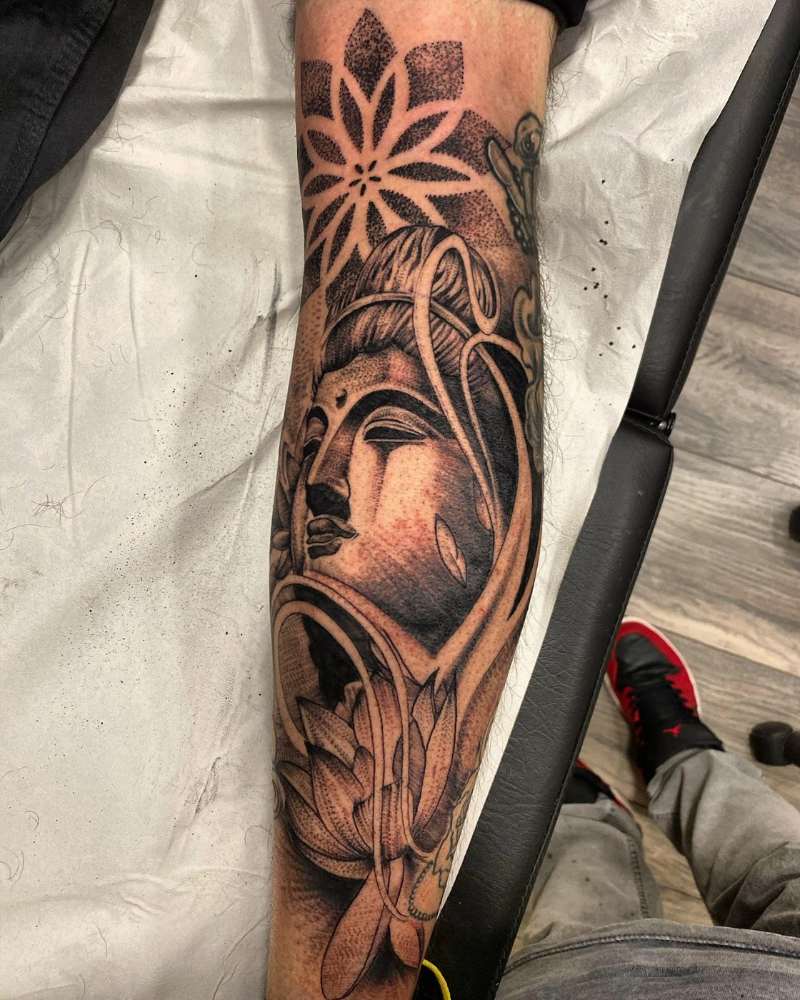
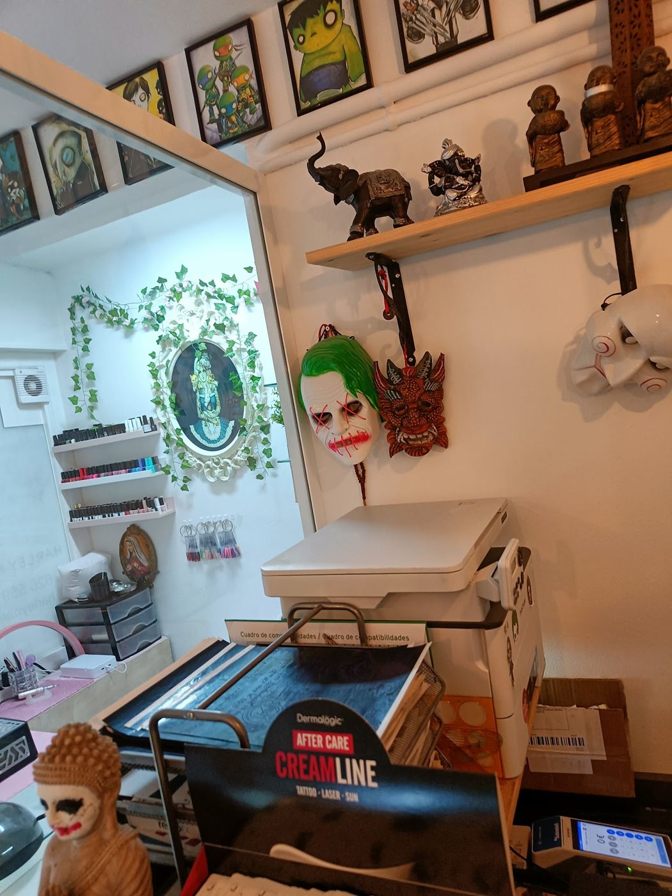
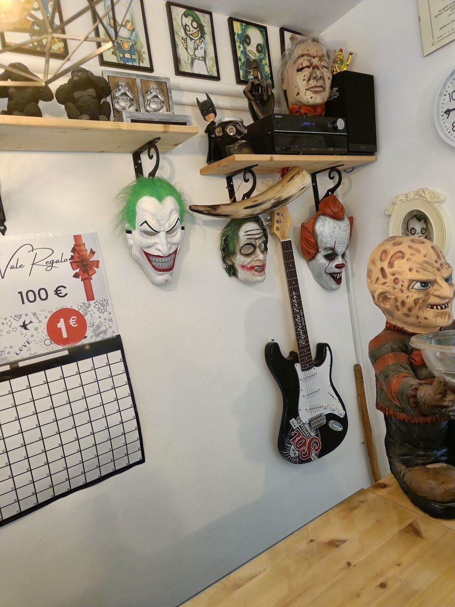
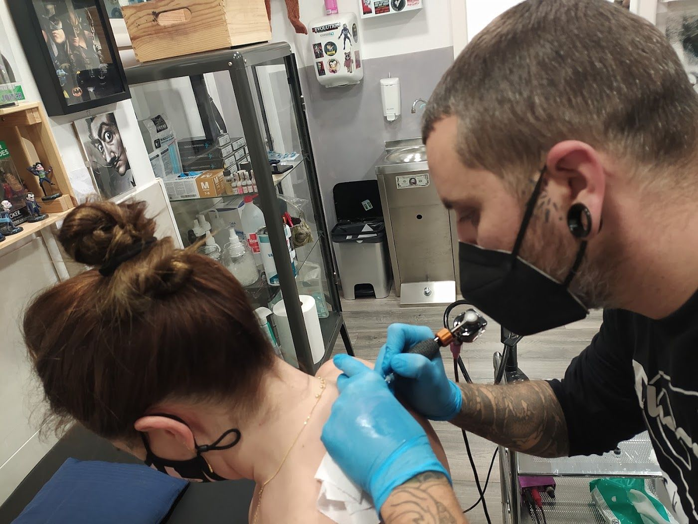

Tu idea, en buenas manos.
Tatuajes, cover-ups y piercings en el Carrer de Nàpols, en Badalona. Te escuchamos, te decimos qué mejoraríamos de tu idea y te damos un precio claro antes de empezar.
★★★★★ 4,9 en Google · 144 opinionesHorario

Cuéntanos tu idea
Tres toques y te decimos qué necesitamos para darte precio. Nos lo mandas por WhatsApp y te contestamos.
¿Qué quieres hacerte?
¿De qué tamaño?
¿En qué zona?



Un estudio con personalidad
El local está decorado con el Joker y el universo DC, pero aquí lo importante es el trabajo: limpio, cuidado y sin prisas. Jordi te asesora y se implica en cada diseño.
- Diseños a medida, también en negro y gris
- Cover-ups: tapamos tatuajes que ya no te gustan
- Piercings
- Te damos precio antes de empezar
Lo que dice la gente
«Muy profesional, me ha tapado 2 tatuajes y han quedado perfectos.»
Opinión en Google«Jordi es un crack! Precio calidad genial.»
Opinión en Google«El trato es muy cercano y agradable. Te asesoran muy bien y hacen un trabajo de 10.»
Opinión en GooglePásate por el estudio
DirecciónCarrer de Nàpols, 41 · 08914 Badalona · Cómo llegar
Teléfono y WhatsApp626 01 50 25
¿Tienes una idea?Escríbenos con una foto o una referencia y te damos día.
Horario